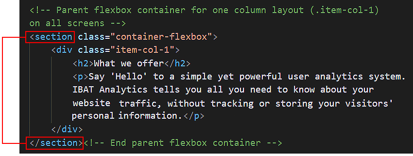
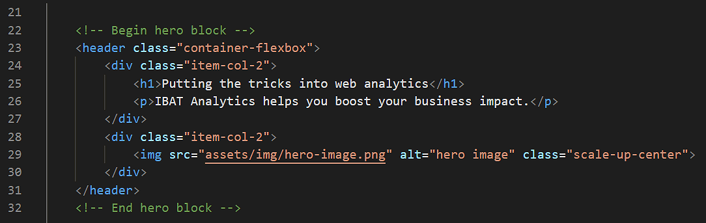
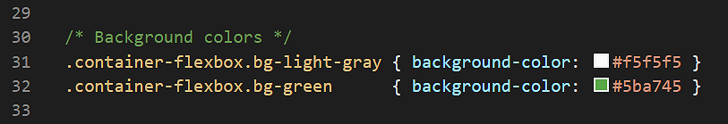
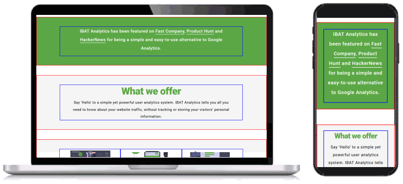
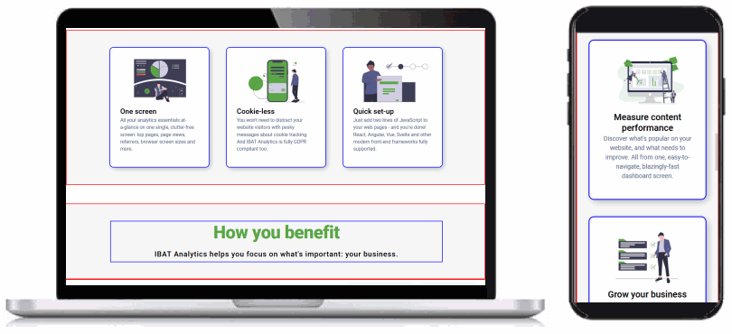

Introduction
This single-page website for a fictitious website analytics product showcases responsive multi-column layouts created with CSS flexbox.
You can display a finished version of this project by clicking the image below.

This single-page website for a fictitious website analytics product showcases responsive multi-column layouts created with CSS flexbox.
You can display a finished version of this project by clicking the image below.
At the end of this Tutorial you will be able to:
Portfolio project folders and files
Working with your project files
The structure of your project web page
Sub-dividing the web page with the <section> tag
Hero blocks and the <header> tag
Section blocks and class names
Adding padding to the sections
Adding background colours to the sections
Styling the single-column layouts
Styling the two-column layouts
Styling the three-column layouts
Styling the ‘happy users’ section
Re-ordering the hero items vertically on mobiles
Your first step is to download the files you need for this project.


This will create a sub-folder named software inside your portfolio folder.

The folders, sub-folders and files for this ‘Software’ project will be as shown below.

Now you can begin to work with the files you have downloaded.

You can close any other files you may have open in VS Code.
Display the project index.html web page in your Chrome or Mozilla Firefox Developer Edition browser. It should look as shown below.

To help you distinguish between the various parent and child elements, the following two styles are added at the end of the style.css stylesheet.

Before and after each of the parent flexbox containers is a set of three ‘blank’ or ‘spacer’ paragraphs. These are to help you see where one container ends and the next container starts.

As with the coloured borders, you can remove these blank paragraphs at the end of the project.
As you can see, the index.html web page is sub-divided into ‘blocks’ of content.
You could use the <div> ... </div> tag pair to sub-divide the web page into blocks.
But a better, more modern HTML5 way is to use another tag pair with the same effect: <section> ... </section>.
Each web page begins with a hero section that is styled with the <header> ... </header> tag pair.
This is similar to the <div> ... </div> tag pair, but is the preferred HTML5 way of identifying the first, introductory content block of a webpage.
Under the two-column ‘hero’ section, the index.html web page is structured as follows:
This flexbox parent-child structure enables the design of a two-column and three-column layout for desktop/laptop screens.
The relationship between the page structure and the class names is shown below.

Follow these steps to add spacing around the four inside edges (top, right, bottom and left) of the parent flexbox containers.
In your web browser, view the index.html web page on desktop/laptop and mobile size screens. It should look as shown below.

In the CSS file, you can see styles have been created for two background colours.
Let’s apply these to the parent flexbox containers in your web page.


In your web browser, view the index.html web page on desktop/laptop and mobile size screens. It should look as shown below.

You have now finished working with the parent flexbox containers. All your remaining changes will be to the child columns inside the parent containers.
On both desktop and mobile screens, parent containers with an item-col-1 child will always display as a single column. Let’s add some padding to these child items.

In your web browser, view the index.html web page on desktop/laptop and mobile size screens. It should look as shown below.
Only the ‘hero’ parent container at the top of the web page has a two-column .item-col-2 layout. On desktop screens, this two-column layout has no gutter spacing between the left and right child columns. Let’s change this.
 The remaining space of 10% will be added between the two child columns, so creating a gutter between the left and right columns.
This applies only to desktop screens (768px or wider) and has no effect on mobile screens (767px or narrower).
The remaining space of 10% will be added between the two child columns, so creating a gutter between the left and right columns.
This applies only to desktop screens (768px or wider) and has no effect on mobile screens (767px or narrower).In your web browser, view the index.html web page on desktop/laptop and mobile size screens. It should look as shown below.
On desktop screens, the three-column layout has no gutter spacing between the child columns. Let’s change this.
 The remaining space of 10% will be added between the child columns.
This applies only to desktop screens (768px or wider) and has no effect on mobile screens (767px or narrower).
The remaining space of 10% will be added between the child columns.
This applies only to desktop screens (768px or wider) and has no effect on mobile screens (767px or narrower).


In your web browser, view the index.html web page on desktop/laptop and mobile size screens. It should look as shown below.
Next, let’s create some new styles that will apply only to the .item-col-3 child columns within the ‘Happy users’ section at the bottom of the web page.


In your web browser, view the index.html web page on desktop/laptop and mobile size screens. It should look as shown below.

Your next step is to re-order how the two .item-col-2 child items within the ‘hero’ section at the top of the web page are displayed on mobile screens.
If you display your web page on a mobile screen, you can see that:

Let’s change this.
In your web browser, view the index.html web page on mobile size screens. It should look as shown below.
You can now delete the visual layout aids from your web pages and stylesheet.

After removing the coloured borders and blank ‘spacer’ paragraphs, scroll down the web page in your web browser to check the spacing between the various elements looks correct.
On both desktop/laptop and mobile screens, you can see that there is too much vertical spacing after the following sections:
Let’s fix this.


You have now completed this Tutorial.
You can display a finished version of the project web page by clicking the image below.

In later Tutorials for this portfolio project you will add an email sign-up form, a footer and menus.
The final step is to upload your project to GitHub.
All the files for this project are in a sub-folder named software of your websites/portfolio folder.
So you will need to upload this software folder to your account on GitHub.


 Click the portfolio folder to access it.
Click the portfolio folder to access it. IMPORTANT Ensure that your GitHub account is displaying the portfolio folder before continuing.
IMPORTANT Ensure that your GitHub account is displaying the portfolio folder before continuing.


 Click the portfolio folder.
Click the portfolio folder. 
Your web page is now published on GitHub at a web address similar to the following, where username is the username you have chosen for your GitHub account:
https://username.github.io/portfolio/software/index.html
or, simply:
https://username.github.io/portfolio/software
It may take a few minutes for your uploaded files to appear on GitHub.
Return to Contents.